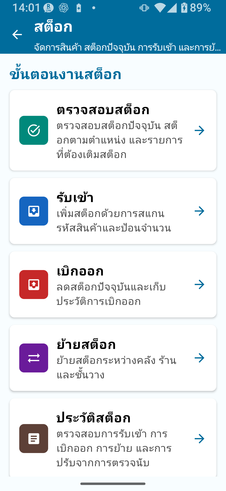
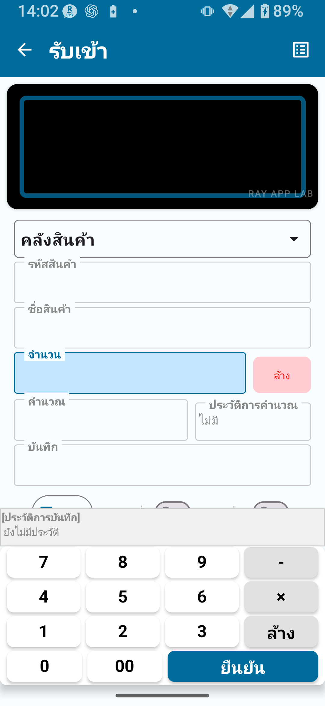
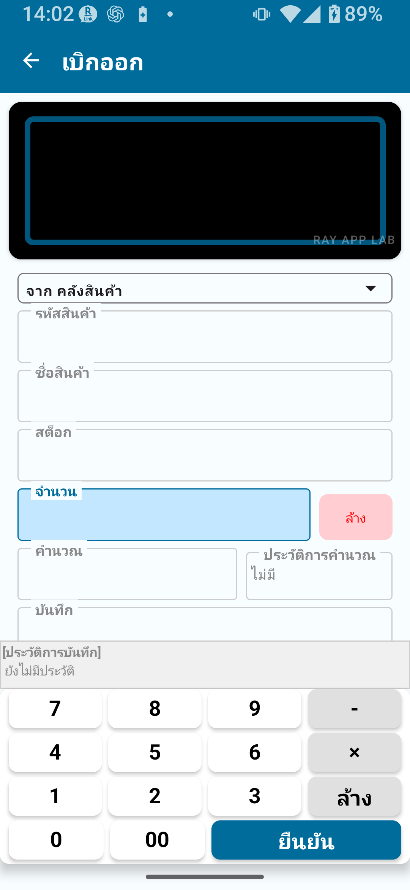
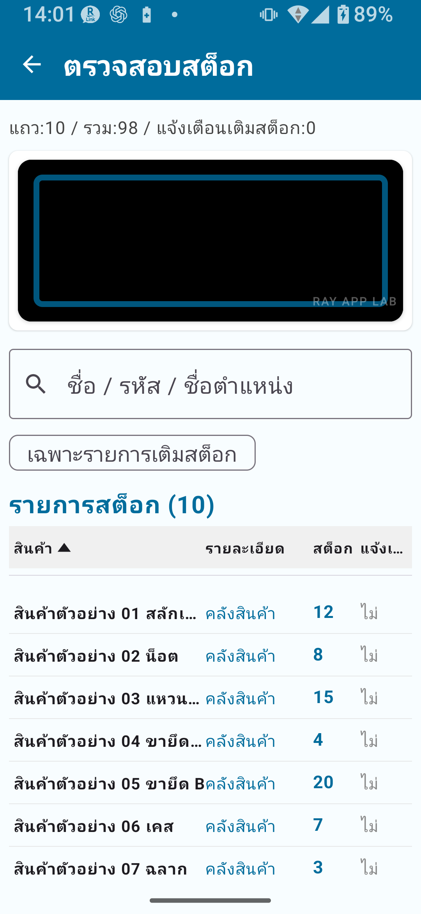
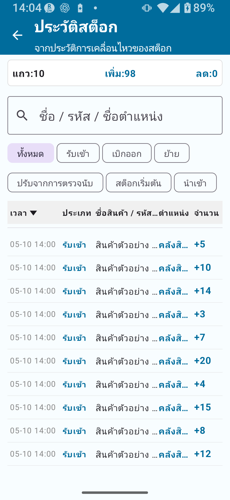
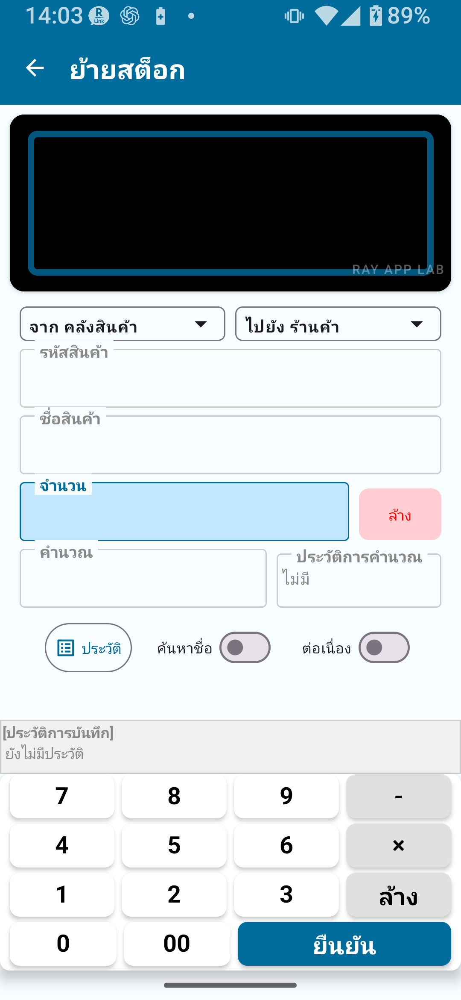
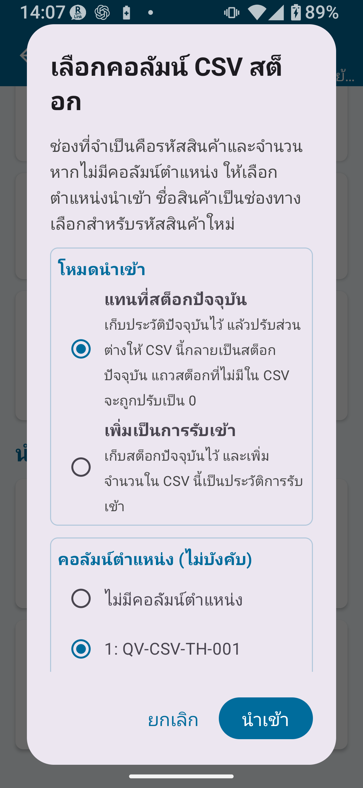
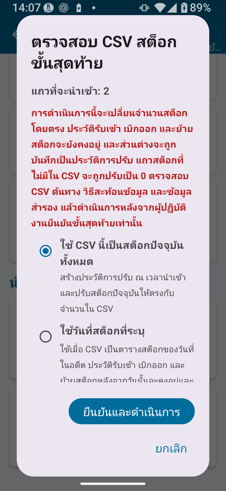

บทที่ 1
ภาพรวมเวอร์ชันมาตรฐาน
เวอร์ชันมาตรฐานของการจัดการสต็อกรองรับจำนวนรายการมากกว่าเวอร์ชันฟรี คุณจึงจัดการงานประจำวัน เช่น การรับเข้า การจ่ายออก การตรวจสอบสต็อก และประวัติสต็อกได้สะดวกขึ้น พร้อมทั้งขยายขอบเขตการจัดการตำแหน่งด้วย
ขีดจำกัดของเวอร์ชันมาตรฐาน
| รายการ | เวอร์ชันฟรี | เวอร์ชันมาตรฐาน |
|---|
| รายการทะเบียน | สูงสุด 30 | สูงสุด 300 |
| รายการประวัติสต็อก | สูงสุด 30 | สูงสุด 1,000 |
| รายการที่ส่งออก | สูงสุด 30 | สูงสุด 300 |
| ล็อกการหมุนหน้าจอ | ✗ | ○ |
| การลงทะเบียนในทะเบียนตำแหน่ง | จำกัดในเวอร์ชันฟรี | ใช้งานได้ภายในขีดจำกัดของเวอร์ชันมาตรฐาน |
| แก้ไขยอดรวมสะสมที่ลงทะเบียนไว้โดยตรง | ✗ | ✗ (ต้องใช้เวอร์ชันครบวงจร) |

รูป 1-1 หน้าจอหลักการจัดการสต็อก
บทที่ 2
ความแตกต่างจากเวอร์ชันฟรี
✅ สิ่งที่ปลดล็อกมาตรฐานเพิ่มหรือขยาย
- เพิ่มขีดจำกัดรายการทะเบียนจาก 30 → 300
- เพิ่มขีดจำกัดประวัติสต็อกจาก 30 → 1,000
- เพิ่มขีดจำกัดการส่งออกจาก 30 → 300
- ใช้ฟังก์ชันล็อกการหมุนหน้าจอได้
- ขยายขอบเขตการจัดการตำแหน่ง
- ดูแลการรับเข้า การจ่ายออก การตรวจสอบสต็อก และประวัติประจำวันอย่างต่อเนื่องได้ง่ายขึ้น
บทที่ 3
รับสินค้าเข้า (Stock In)
การรับสินค้าเข้าเป็นการเพิ่มจำนวนสต็อก ใช้เมื่อสินค้ามาถึง เช่น การซื้อ การรับสินค้า หรือธุรกรรมลักษณะเดียวกัน

รูป 3-1 หน้าจอรับสินค้าเข้า
ขั้นตอนการรับสินค้าเข้า
- ไปที่ การจัดการสต็อก → รับสินค้าเข้า
- สแกนบาร์โค้ดหรือป้อนรหัสสินค้า
- ยืนยันชื่อสินค้า หากรหัสยังไม่ได้ลงทะเบียน ให้ดำเนินการสร้างรายการใหม่ในทะเบียนสินค้า
- ในรายการทะเบียนสินค้าใหม่ ให้ลงทะเบียนชื่อสินค้า ราคาขาย และจุดสั่งซื้อซ้ำ
- หลังบันทึกแล้ว ให้กลับไปที่หน้าจอรับสินค้าเข้า — รหัสสินค้าและชื่อสินค้าที่ลงทะเบียนไว้จะถูกกรอกให้อัตโนมัติ
- เลือกตำแหน่งปลายทาง เช่น คลังสินค้า ร้านค้า เป็นต้น
- ป้อนจำนวนที่รับเข้า
- แตะ บันทึก จำนวนจะถูกเพิ่มเข้าในสต็อกทันที
- ตรวจสอบการอัปเดตในหน้าจอตรวจสอบสต็อกหรือประวัติสต็อก
💡 เกี่ยวกับคุณสมบัติในทะเบียนสินค้าราคาขายและจุดสั่งซื้อซ้ำเป็นคุณสมบัติที่จัดการในทะเบียนสินค้า — ไม่ใช่ข้อมูลที่ต้องป้อนในทุกธุรกรรมรับเข้า ในหน้าจอรับสินค้าเข้าปกติ ให้เน้นการป้อนจำนวน ตำแหน่ง และหมายเหตุ
⚠ หมายเหตุการรับสินค้าเข้าจะสะท้อนในสต็อกทันที โปรดยืนยันจำนวนและตำแหน่งก่อนบันทึกเสมอ หากพบว่าบันทึกจำนวนผิดหลังจากบันทึกแล้ว ให้ตรวจสอบประวัติสต็อกและทำตามคำแนะนำในแอปเพื่อแก้ไข ย้อนรายการ หรือบันทึกการปรับตามความเหมาะสม
บทที่ 4
จ่ายสินค้าออก (Stock Out)
การจ่ายสินค้าออกเป็นการลดจำนวนสต็อก ใช้สำหรับการขาย การนำสินค้าออก การส่งมอบสินค้า และธุรกรรมลักษณะเดียวกัน

รูป 4-1 หน้าจอจ่ายสินค้าออก
ขั้นตอนการจ่ายสินค้าออก
- ไปที่ การจัดการสต็อก → จ่ายสินค้าออก
- สแกนบาร์โค้ดหรือป้อนรหัสสินค้า
- ยืนยันชื่อสินค้า
- เลือกตำแหน่งต้นทาง ซึ่งเป็นตำแหน่งที่สต็อกจะถูกนำออก
- ป้อนจำนวนที่จ่ายออก
- แตะ บันทึก จำนวนจะถูกหักออกจากสต็อกทันที
- ตรวจสอบการอัปเดตในหน้าจอตรวจสอบสต็อกหรือประวัติสต็อก
💡 เกี่ยวกับฟิลด์สต็อกฟิลด์สต็อกในหน้าจอจ่ายสินค้าออกจะแสดงสต็อกปัจจุบันของสินค้าและตำแหน่งที่เลือกไว้เพื่อใช้อ้างอิงเท่านั้น ไม่ใช่ฟิลด์ป้อนข้อมูลที่แก้ไขได้ สต็อกจะลดลงเมื่อบันทึกจำนวนที่จ่ายออก
🚨 สำคัญอย่าป้อนจำนวนจ่ายออกที่มากกว่าสต็อกปัจจุบัน โปรดตรวจสอบระดับสต็อกตามตำแหน่งก่อนป้อนจำนวนที่จะจ่ายออก
หน้าจอตรวจสอบสต็อกจะแสดงยอดรวมสต็อกต่อสินค้าในตอนแรก การตรวจสอบการเติมสต็อกจะเปรียบเทียบยอดรวมสต็อกจากทุกตำแหน่งที่เปิด “รวมในการตรวจสอบการเติมสต็อก” กับจุดสั่งซื้อซ้ำในทะเบียนสินค้า

รูป 5-1 หน้าจอตรวจสอบสต็อก
ขั้นตอนการตรวจสอบสต็อก
- ไปที่ การจัดการสต็อก → ตรวจสอบสต็อก
- ค้นหาสินค้าที่ต้องการตรวจสอบ โดยใช้การค้นหาหรือเลื่อนดูรายการ
- ระบุสินค้าที่ต่ำกว่าจุดสั่งซื้อซ้ำ ซึ่งจะแสดงว่าเป็นสินค้าที่อาจต้องเติมสต็อก
- แตะสินค้าเพื่อดูรายละเอียดตามตำแหน่ง ประวัติ และข้อมูลเพิ่มเติม ในมุมมองแยกตามตำแหน่ง การตรวจสอบการเติมสต็อกจะไม่แสดงหรือถือว่าไม่ได้ใช้งาน
ประวัติสต็อกแสดงบันทึกการดำเนินการทั้งหมด เช่น การรับเข้า การจ่ายออก การโอนย้าย การปรับจากการตรวจนับ สต็อกเริ่มต้น และการนำเข้า CSV

รูป 6-1 หน้าจอประวัติสต็อก
สิ่งที่ดูได้ในประวัติสต็อก
- วันที่/เวลาและประเภทการดำเนินการ เช่น รับเข้า จ่ายออก โอนย้าย ปรับสต็อก เป็นต้น
- รหัสสินค้าและชื่อสินค้า
- ตำแหน่งและการเปลี่ยนแปลงจำนวน
- หมายเหตุ
💡 เคล็ดลับหากจำนวนสต็อกไม่ตรงกัน ให้เลื่อนดูย้อนหลังในประวัติสต็อกเพื่อตรวจสอบข้อผิดพลาดในการป้อนข้อมูลหรือการปรับที่ไม่คาดคิด
เวอร์ชันมาตรฐานใช้ตำแหน่งพื้นฐานหลักคือ “คลังสินค้า” และ “ร้านค้า”
| โหมด | ตำแหน่งที่ใช้ได้ |
|---|
| แบบง่าย A | เฉพาะคลังสินค้า |
| แบบง่าย B | คลังสินค้า + ร้านค้า |
| แบบง่าย C | เฉพาะร้านค้า |
การโอนย้ายสต็อก
การโอนย้ายสต็อกคือการย้ายจำนวนสต็อกจากตำแหน่งหนึ่งไปยังอีกตำแหน่งหนึ่ง
⚠ หมายเหตุอย่าโอนย้ายระหว่างตำแหน่งเดียวกัน หากมีเพียงตำแหน่งเดียว เช่น แบบง่าย A การโอนย้ายสต็อกไม่จำเป็น ให้ใช้การรับเข้า การจ่ายออก หรือการแก้ไขแทน
💡 เคล็ดลับหากต้องการใช้ตำแหน่งแบบละเอียด เช่น หมายเลขชั้นวาง ให้เปลี่ยนเป็นโหมด แบบละเอียด ในการตั้งค่า โหมดแบบละเอียดใช้เมื่อเข้าถึงฟีเจอร์ของเวอร์ชันครบวงจร
บทที่ 8
นำเข้า / ส่งออก CSV
การจัดการสต็อกช่วยให้นำเข้า ส่งออก และสำรองข้อมูลสต็อกด้วยไฟล์ CSV ได้
🚨 สำคัญการนำเข้า CSV อาจเปลี่ยนแปลงข้อมูลของคุณอย่างมาก โปรดส่งออก CSV สำรองข้อมูลก่อนนำเข้าเสมอ
ข้อกำหนด CSV สำหรับสต็อก
| ประเภท CSV | วัตถุประสงค์ | คอลัมน์หลัก | จำเป็น/ไม่บังคับ | หมายเหตุ | ใช้ได้ใน |
|---|
| CSV สต็อก (มีคอลัมน์ตำแหน่ง) | นำเข้าข้อมูลสต็อกแยกตามตำแหน่ง | location, item_code, quantity, product_name | ต้องมี location, item_code, quantity; product_name จำเป็นตามเงื่อนไข | ต้องมีคอลัมน์ product_name สำหรับรหัสที่ยังไม่ได้ลงทะเบียน | การจัดการสต็อกเวอร์ชันมาตรฐานขึ้นไป |
| CSV สต็อก (ไม่มีคอลัมน์ตำแหน่ง) | นำเข้าข้อมูลสต็อกไปยังตำแหน่งที่ระบุ | item_code, quantity, product_name | ต้องมี item_code, quantity | เลือกตำแหน่งปลายทางในตอนนำเข้า | การจัดการสต็อกเวอร์ชันมาตรฐานขึ้นไป |
| CSV สำรองข้อมูล | สำรองและกู้คืนข้อมูลครบถ้วน | สินค้า สต็อกปัจจุบัน ตำแหน่ง หมวดหมู่ — หลายไฟล์ | ต้องใช้ชุดข้อมูลสำรองครบชุด | อาจถูกแบ่งเป็นหลายไฟล์ | การจัดการสต็อกเวอร์ชันมาตรฐานขึ้นไป |
การใช้หน้าจอแมปคอลัมน์
เมื่อนำเข้า CSV ให้เลือกว่าคอลัมน์ใดตรงกับรหัสสินค้า ชื่อสินค้า จำนวน ตำแหน่ง และข้อมูลอื่น ๆ
- เลือกไฟล์ CSV
- ในหน้าจอแมปคอลัมน์ ให้กำหนดแต่ละคอลัมน์ CSV ให้ตรงกับฟิลด์ที่เกี่ยวข้อง เช่น รหัสสินค้า จำนวน เป็นต้น
- ยืนยันการกำหนดคอลัมน์และดำเนินการนำเข้า
⚠ ข้อผิดพลาดทั่วไปในการนำเข้า CSV
- คอลัมน์ที่จำเป็นขาดหายไป
- คอลัมน์เดียวกันถูกกำหนดให้มากกว่าหนึ่งฟิลด์
- คอลัมน์จำนวนว่างหรือไม่ใช่ตัวเลข
- ไม่ได้เลือกคอลัมน์ชื่อสินค้าสำหรับรหัสที่ยังไม่ได้ลงทะเบียน
- ไม่มีคอลัมน์ตำแหน่งและไม่ได้เลือกตำแหน่งปลายทาง
- CSV ว่างหรือไม่มีแถวที่นำเข้าได้

รูป 8-1 หน้าจอโอนย้ายสต็อก
บทที่ 9
แทนที่สต็อกปัจจุบัน
แทนที่สต็อกปัจจุบันคือโหมดนำเข้า CSV ที่ใช้จำนวนในไฟล์เป็นสต็อกปัจจุบันชุดใหม่ ประวัติที่มีอยู่จะถูกเก็บรักษาไว้ และส่วนต่างจะถูกบันทึกเป็นรายการปรับในประวัติ
🚨 สำคัญ: ใช้การแทนที่สต็อกปัจจุบันด้วยความระมัดระวัง
- แถวสต็อกที่ไม่มีอยู่ใน CSV อาจถูกตั้งค่าเป็น 0
- การดำเนินการนี้อาจมีผลกระทบอย่างมากต่อข้อมูลสต็อกเดิม — โปรดสำรองข้อมูลก่อนเสมอ
- อ่านหน้าจอยืนยันอย่างละเอียดก่อนดำเนินการ
ขั้นตอนการแทนที่สต็อกปัจจุบัน
- ส่งออก CSV สำรองข้อมูล (จำเป็น)
- ไปที่ การจัดการสต็อก → นำเข้า CSV → แทนที่สต็อกปัจจุบัน
- เลือกไฟล์ CSV ที่ต้องการนำเข้า
- ยืนยันการแมปคอลัมน์ในหน้าจอแมปคอลัมน์
- ในหน้าจอยืนยัน ให้ตรวจสอบรายละเอียดการแทนที่หรือเนื้อหาการปรับอย่างรอบคอบ
- หากทุกอย่างถูกต้อง ให้ดำเนินการนำเข้า
- ตรวจสอบรายการปรับในประวัติสต็อก

รูป 9-1 หน้าจอแมปคอลัมน์ CSV สต็อก

รูป 9-2 หน้าจอยืนยันการแทนที่สต็อก
บทที่ 10
เพิ่มเป็นรับสินค้าเข้า
เพิ่มเป็นรับสินค้าเข้าคือโหมดนำเข้า CSV ที่เพิ่มจำนวนในไฟล์เข้าไปในสต็อกที่มีอยู่ในฐานะธุรกรรมรับเข้า ต่างจากการแทนที่สต็อกปัจจุบัน เพราะเป็นการเพิ่มเข้าไป ไม่ใช่เขียนทับสต็อกปัจจุบัน
| โหมดนำเข้า | พฤติกรรม | ตัวอย่างการใช้งาน |
|---|
| แทนที่สต็อกปัจจุบัน | ใช้จำนวนใน CSV เป็นสต็อกปัจจุบันชุดใหม่ และบันทึกส่วนต่างเป็นประวัติการปรับ | แก้ไขสต็อกหลังตรวจนับ การตั้งค่าเริ่มต้น |
| เพิ่มเป็นรับสินค้าเข้า | เพิ่มจำนวนใน CSV เข้าไปในสต็อกปัจจุบันในฐานะการรับเข้า | นำเข้าการรับสินค้าเข้าจำนวนมาก |
💡 เคล็ดลับใช้ แทนที่สต็อกปัจจุบัน เมื่อตั้งค่าสต็อกครั้งแรก และใช้ เพิ่มเป็นรับสินค้าเข้า เมื่อเพิ่มจำนวนเข้าไปในสต็อกที่มีอยู่แล้ว โปรดยืนยันว่าต้องการใช้โหมดใดก่อนดำเนินการนำเข้า
⚠ การตั้งค่าตำแหน่งแบบละเอียดหากต้องการใช้ตำแหน่งแบบละเอียด ให้เปลี่ยนเป็นโหมด แบบละเอียด ในการตั้งค่า ตำแหน่งแบบละเอียดจะไม่แสดงหากยังอยู่ในโหมดแบบง่าย A/B/C
⚠ ตรวจสอบตำแหน่งและจำนวนก่อนดำเนินการการรับเข้า การจ่ายออก การโอนย้าย และการนำเข้า CSV จะสะท้อนในสต็อกทันที โปรดยืนยันตำแหน่งและจำนวนก่อนดำเนินการแต่ละครั้ง
🚨 สำรองข้อมูลก่อนดำเนินการกับ CSVโปรดสำรองข้อมูลทุกครั้งก่อนใช้การแทนที่สต็อกปัจจุบัน เพิ่มเป็นรับสินค้าเข้า และการกู้คืนจากข้อมูลสำรอง
บทที่ 12
ขั้นตอนการทำงานที่แนะนำ
บันทึกการรับเข้าและการจ่ายออกทุกวัน
- ทุกครั้งที่สินค้ามาถึง ให้ลงทะเบียนสต็อกที่รับเข้าผ่านเมนูรับสินค้าเข้า
- ทุกครั้งที่สินค้าออกไป ให้บันทึกสต็อกที่จ่ายออกผ่านเมนูจ่ายสินค้าออก
- ตั้งจุดสั่งซื้อซ้ำในทะเบียนสินค้า และใช้หน้าจอตรวจสอบสต็อกเพื่อติดตามช่วงเวลาที่ควรเติมสต็อก
ตรวจสอบสต็อกเป็นประจำ
- ตรวจสอบจำนวนสต็อกเป็นประจำ เช่น รายสัปดาห์ รายเดือน หรือตามความจำเป็น
- ใช้ร่วมกับการตรวจนับสต็อกเพื่อตรวจสอบเป็นระยะว่าจำนวนจริงตรงกับบันทึกสต็อกหรือไม่
สำรองข้อมูลเป็นประจำ
- ส่งออก CSV สำรองข้อมูลอย่างน้อยเดือนละครั้ง และเก็บไว้ในคอมพิวเตอร์หรือพื้นที่จัดเก็บบนคลาวด์
💡 ควรพิจารณาอัปเกรดเป็นเวอร์ชันครบวงจร หากคุณ…
- ต้องการให้ผลการตรวจนับสต็อกอัปเดตไปยังการจัดการสต็อกโดยอัตโนมัติ
- ต้องแก้ไขยอดรวมสต็อกสะสมที่ลงทะเบียนไว้โดยตรง
- มีสินค้ามากกว่า 300 รายการ
📌 สรุปประเด็นสำคัญของบท
- เวอร์ชันมาตรฐานเพิ่มขีดจำกัดเป็นรายการทะเบียนสูงสุด 300 รายการ ประวัติสูงสุด 1,000 รายการ และรายการส่งออกสูงสุด 300 รายการ
- การรับเข้าและการจ่ายออกสะท้อนในสต็อกทันที — โปรดยืนยันจำนวนและตำแหน่งก่อนบันทึก
- ประวัติสต็อกแสดงบันทึกครบถ้วนของการรับเข้า การจ่ายออก การโอนย้าย และการปรับทั้งหมด
- การนำเข้า CSV มีสองโหมดคือ แทนที่สต็อกปัจจุบัน และเพิ่มเป็นรับสินค้าเข้า โปรดสำรองข้อมูลก่อนใช้ทั้งสองโหมด
- ตำแหน่งถูกตั้งค่าผ่านแบบง่าย A/B/C หากต้องการตำแหน่งแบบละเอียด ให้เปลี่ยนเป็นโหมดแบบละเอียด
- การแก้ไขยอดรวมสะสมที่ลงทะเบียนไว้โดยตรงต้องใช้เวอร์ชันครบวงจร
🔍 หมายเหตุก่อนใช้งาน
- ใช้ทะเบียนตำแหน่งภายในตัวเลือกที่แสดงในแอป หากต้องการจัดการตำแหน่งแบบละเอียด ให้ตรวจสอบโหมดปัจจุบันและพิจารณาฟีเจอร์ของเวอร์ชันครบวงจรตามความจำเป็น
- หากบันทึกรายการรับเข้าหรือจ่ายออกผิดพลาด ให้ตรวจสอบประวัติสต็อกและทำตามคำแนะนำในแอปเพื่อแก้ไข ย้อนรายการ หรือบันทึกการปรับตามความเหมาะสม
- เมื่อส่งออกชุด CSV สำรองข้อมูล ให้เก็บไฟล์ที่สร้างขึ้นทั้งหมดไว้ด้วยกันและจัดเก็บในที่ปลอดภัย
- หน้าจอโอนย้ายสต็อกได้รับการตรวจสอบและแสดงเป็นภาพประกอบในบทที่เกี่ยวข้องแล้ว
- หน้าจอแมปคอลัมน์ CSV และหน้าจอยืนยันการแทนที่สต็อกได้รับการเพิ่มเป็นภาพประกอบแล้ว